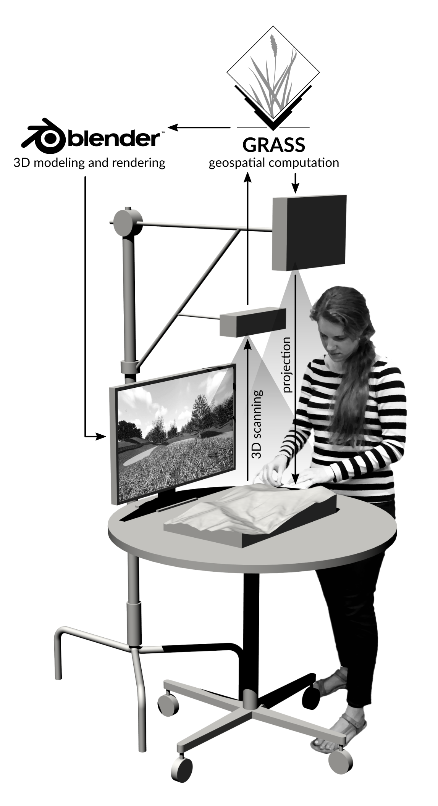

Tangible Landscape
Brendan Harmon
Louisiana State University
Tangible modeling
UC Davis, Augmented Reality Sandbox, 2012-present
Source: Oliver Kreylos, UC Davis
UC Davis, Augmented Reality Sandbox, 2012-present
Source: Oliver Kreylos, UC Davis
Tangible modeling
NCSU CGA & LSU Design, Tangible Landscape, 2013-present
Tangible Landscape
Tangible Landscape
Simulated water flow
Tangible Landscape
Visibility
Tangible Landscape
3D planting
Tangible Landscape
Teaching grading and terrain analyis
Tangible Landscape
Design implications
- Rapid conceptual design with scientific analytics
- Easily engage stakeholders and the public in the design process
- New ways to teach grading, hydrology, & geomorphology
Tangible Landscape
Free and open source software